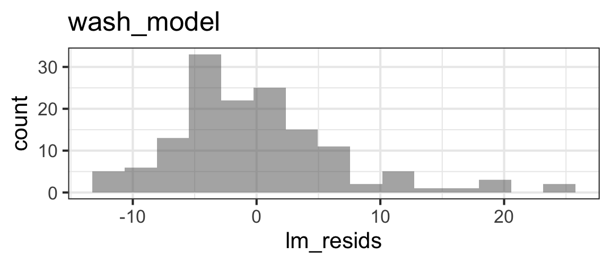

wash_data <- read_csv('https://sldr.netlify.app/data/ebola-WASH.csv',
show_col_types = FALSE)
glimpse(wash_data)27 Regression for Count Responses: Formulation
27.1 Module Learning Outcomes
So far, all our response variables have been continuous, quantitative values whose values were not bounded (they could be positive or negative, of any magnitude). At least…most of the models we tried that passed assessment probably had such response variables! But as you may have already noted, sometimes variables of interest are categorical, or contain count data, or can’t take on negative values, and so on. This module is our first chance to model a different type of response variable. We begin with count data, using Poisson regression (briefly) before moving on to the more widely-applicable negative binomial regression.
By the end of the module you will:
- Outline the mathematical adjustments needed to go from multiple linear regression to regression for count data
- Understand how Poisson regression models can be fitted with maximum likelihood estimation
- Explain the difference between Poisson and Negative Binomial generalized linear models (GLMs), noting advantages/disadvantages and choosing an appropriate one
- Practice planning a count regression model using a causal diagram and the n/15 rule
- Fit Poisson and Negative Binomial GLMs in R
- Begin doing model assessment for count data GLMs
27.2 Text Reference
Recommended reading for the materials covered in this tutorial can be found in:
- Beyond Multiple Linear Regression Chapters 4-5
- Course Notes Chapter 6
- Ecological Models & Data in R Chapter 9.4
It’s suggested that you consider consulting these chapters after doing this tutorial, with particular focus on any topics you found most challenging.
27.3 Data #1: Ebola
This dataset comes from the paper, WASH activities at two Ebola treatment units in Sierra Leone by Michaela Mallow, Lee Gary, Timmy Jeng, Bob Bongomin Jr, Miriam Tamar Aschkenasy, Peter Wallis, Hilarie H. Cranmer, Estifanos Debasu, & Adam C. Levine (https://doi.org/10.1371/journal.pone.0198235).
The authors state,
The 2014 outbreak of Ebola virus disease (EVD) in West Africa was the largest in history. Starting in September 2014, International Medical Corps (IMC) operated five Ebola treatment units (ETUs) in Sierra Leone and Liberia. This paper explores how future infectious disease outbreak facilities in resource-limited settings can be planned, organized, and managed by analyzing data collected on water, sanitation, and hygiene (WASH) and infection prevention control (IPC) protocols…The IMC WASH/IPC database contains data from over 369 days. Our results highlight parameters key to designing and maintaining an ETU. High concentration chlorine solution usage was highly correlated with both daily patient occupancy and high-risk zone staff entries; low concentration chlorine usage was less well explained by these measures. There is high demand for laundering and disinfecting of personal protective equipment (PPE) on a daily basis and approximately 1 (0–4) piece of PPE is damaged each day.
We might be able to confirm some of their findings.
Variables in the dataset include:
MedStaffHRZ, High risk zone staff entries by medical staffWASHStaffHRZ, High risk zone staff entries by WASH staff (for cleaning, etc.)TotalStaffHRZ1, Total number of staff entries to high risk zone- Patient
Occupancy(number of people being treated) - Treatment Center
Location FreshWateramount usedTotalWateramount used- Number of
CoverallsUsed(Coveralls are body suits used to prevent infection) - Amount of
PPEDamaged(PPE is personal protective equipment like masks, gowns) - Amount of
HighChlorinedisinfectant used - Amount of
LowChlorinedisinfectant used - Amount of
ScrubsLaundered
Note that since not all variables were recorded at all locations at all times, there are many missing values in this dataset. Also, you’re advised to ignore (not use) any other variables not included in the list above.
Research Question
Is there an association between the number of N95 masks used and the number of patients being treated in the facility?
Data Access
You can find this data at: https://sldr.netlify.app/data/ebola-WASH.csv
Causal Diagram
Take a moment to sketch a causal diagram for this situation.
I did…and I’d argue that to answer our research question, with the number of N95 masks (N95Used) as the response variable and number of patients (Occupancy) as the key predictor of interest, the only other predictor it makes sense to include in our model is the number of medical staff entering the high-risk zone (MedStaffHRZ).
After making your own diagram, do you agree? If not, what would you do instead?
Diagram notes
flowchart LR A[Occupancy] --> B(N95Used) C[MedStaffHRZ] --> B C --> D[PPEDamaged] A --> E[Items Used] A --> F[PPEDamaged] A --> G[Water Use] C --> E C --> F
In my diagram, the number of med staff entering the HRZ affects the number of masks used directly and also via the number of items of PPE damaged. Patient occupancy affects the number of N95s directly, too.
Other than that, occupancy affects the number of other items used or washed or damaged, and also the amount of water (of all kinds) used. The number of med staff present also affects the number of various items used/washed/damaged. Location might complicate matters, but we only actually have data on N95 masks used from one location of the two studied. So I can’t identify any confounders or other variables that must be included to model what we would like to model.
27.4 A bad idea: multiple linear regression model
This isn’t going to work. We’re just trying it to observe how exactly it doesn’t work. Spoiler: the model fitting will run, happily. But the model will fail assessment and thus will be useless…for regression modeling, “the code ran” is not the same as “the modeling ‘worked’”!
Review the results and see what issues you spot.
wash_data <- wash_data |>
select(N95Used, MedStaffHRZ, Occupancy) |>
drop_na()
wash_model <- lm(N95Used ~ MedStaffHRZ + Occupancy,
data = wash_data)
summary(wash_model)
Call:
lm(formula = N95Used ~ MedStaffHRZ + Occupancy, data = wash_data)
Residuals:
Min 1Q Median 3Q Max
-11.9692 -4.2177 -0.6894 3.0177 24.4712
Coefficients:
Estimate Std. Error t value Pr(>|t|)
(Intercept) 6.7081 1.4706 4.562 1.09e-05 ***
MedStaffHRZ 1.1292 0.1207 9.352 < 2e-16 ***
Occupancy 1.3012 0.1996 6.520 1.16e-09 ***
---
Signif. codes: 0 '***' 0.001 '**' 0.01 '*' 0.05 '.' 0.1 ' ' 1
Residual standard error: 6.885 on 141 degrees of freedom
Multiple R-squared: 0.6581, Adjusted R-squared: 0.6533
F-statistic: 135.7 on 2 and 141 DF, p-value: < 2.2e-16

27.5 Problems with the linear model
What problems do we have with this model (its appropriateness, or goodness of fit to the data)?
- Non-constant error variance, with a classic “trumpet” shape
- Non-normality of residuals
- We didn’t see it here, but in similar cases we may see: some predicted values are less than 0 (which is impossible! N95s cannot magically become unusued; we can’t use a negative number of them).
- We also note a problem with residual independence, but don’t worry too much about that part today as it’s a separate problem from the rest.
27.6 Another Example
Let’s consider another example where we might want to fit a regression model, but the response variable is also count data.
27.7 Poisson Regression
So what can we do instead of the standard multiple regression model we already know (and love?)?
27.8 Poisson Model Assessment
What conditions must hold for a Poisson regression model to be appropriate?
- Response variable (y) contains count data
- Linearity: \(log(\lambda_{i})\) is a linear function of the predictor(s) \(x_1\), \(x_2\), … \(x_n\).
- Mean = Variance
- Independence (of residuals)
- There is not a condition specifying a PDF that the residuals should follow. (No normality condition.)
Let’s review and learn how to check these conditions. How is model assessment different for a Poisson model?
27.9 Problem: Overdispersion
We will actually not really continue using Poisson regression. Wait! Why not?
It turns out that the mean = variance condition of Poisson regression is pretty restrictive, and rarely met in practice. Most often, the residuals are actually overdispersed: the variance is greater than the mean by some amount.
Cases are super rare where it’s not worth estimating just one extra parameter to account for this (if it’s there…which it nearly always is).
I’m suggesting there’s some variation on a Poisson regression - another count regression model that does account for overdispersion.
There is! It’s called Negative Binomial regression (you got it – it uses the Negative Binomial distribution instead of the Poisson, but is otherwise very similar). Some people use quasi-Poisson regression for the same purpose, but our go-to model for any dataset where our response variable is count data will always be the negative binomial model. This allows us to continue fitting models via maximum-likelihood estimation, without resorting to the quasi-likelihood approach the quasi-Poisson model has to empoy.
27.10 Negative Binomial Models
What’s a NB regression and how do we fit one?
27.11 Equations
In the videos above, there may be some errors in how the model equation is presented - specifically, how the residuals are included in the equation.
As the videos say, these models do still have residuals! But, to clarify, we might want to write the model equations as shown below.
Poisson Model
\[ log(\lambda_i) = \beta_0 + \beta_1 x_{1i} + \beta_2 x_{2i} + \dots \beta_k x_{ki} \]
\[ y_i \sim Poisson(\lambda_i) \]
And the residual for the ith data point is \(e_i\):
\[ e_i = y_i - e^{(\beta_0 + \beta_1 x_{1i} + \beta_2 x_{2i} + \dots \beta_k x_{ki})} \]
Negative Binomial Model
\[ log(\mu_i) = \beta_0 + \beta_1 x_{1i} + \beta_2 x_{2i} + \dots \beta_k x_{ki} \]
\[ y_i \sim NB1(\mu_i, \phi) \text{ or } y_i \sim NB2(\mu_i, \phi) \]
And the residual for the ith data point is \(e_i\):
\[ e_i = y_i - e^{(\beta_0 + \beta_1 x_{1i} + \beta_2 x_{2i} + \dots \beta_k x_{ki})} \]
(but it’s not correct to tack the residuals on to the RHS of the equation…)
27.12 What’s Next
Next week, we’ll continue working with count regression a bit more, considering:
- Offsets
- Practice with model selection
- Practice with prediction plots & interpretation
For now, enjoy your brand new skills:
- Fitting regression models to count data
- Using DHARMa scaled residuals to check mean-variance conditions during model assessment